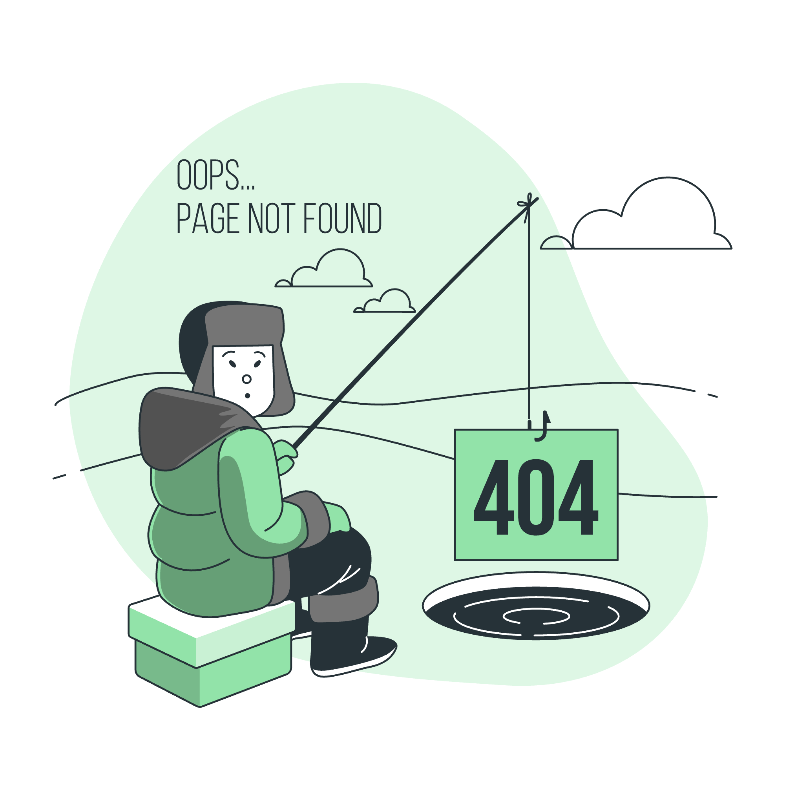

Page not found
The page you’re looking for doesn’t exist or has been moved. Use the action below to recover.
An error state designed to reduce friction and guide users back to meaningful next steps.

The page you’re looking for doesn’t exist or has been moved. Use the action below to recover.